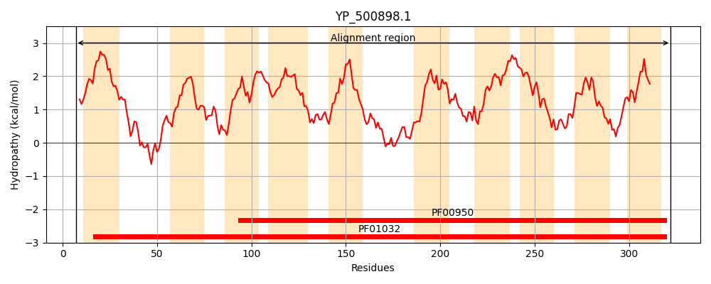
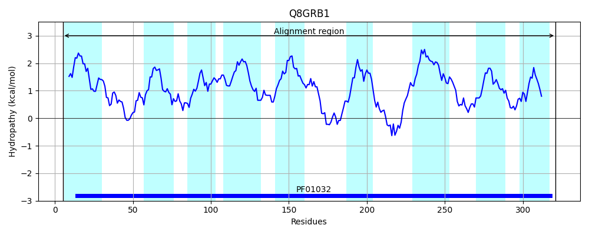
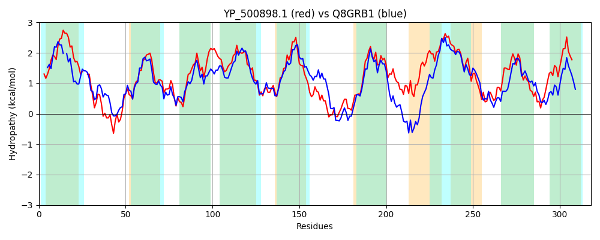

Hit Accession: Q8GRB1
Hit TCID: 3.A.1.14.8
Hit Description: gnl|BL_ORD_ID|16222 gnl|TC-DB|Q8GRB1|3.A.1.14.8 Ferric vibrioferrin transport system permease protein PvuD - Vibrio parahaemolyticus.
Mach Len: 318
e:0.000000
Query TMS Count : 10
Hit TMS Count: 9
TMS-Overlap Score: 8.400000
Predicted Substrates:CHEBI:84633;iron(III) vibrioferrin
BLAST Alignment:
Score: 668 , Bit scores: 261 bits, E-value: 2.8e-86, Alignment length: 318, Percentage identity: 43
Query: 7 IRRYSLITILLIVSIFISLCVGSVMI--HPIDAIKGIFTQDDFILNEYRIPRTLLGIIIGSSLAISGAIIQAVIRNPLASPDVIGISKGASLAAVIIIMTFPTAPLFVLPIGSFLGAFAVSLFLSFLISKYDVKGSKLALIGLAIGAICTAIVQFLLIRNPLEANKALVWLTGSLYGHDMSNIYTILPWFLITIPIIILLSYQLDVLNLGDAVATALGLKVKTIKMLLLILAVILAGSAISVVGGISFLGLIAPHIARQLIGNKTLHVIIMSGLIGAILLTFGDGLARGIHPPLDIPVGVIIAIIGAPYFLILLRRMK 322
I+ +LI +LLI S ++L VG+ + + A+ F+ DF++++YR+PR LL I +G+ L +SG ++Q VIRNPLASPD++GIS GA LAA ++ +P AP+ +LP+ + G + F++ L ++LALIG+A+ A + + FLLI +P+E N A+VWLTGSL+G + + I L+ +P+ L+++LDV+ LG+ AT LG K K I++L LI AV+LA ++SV G ISF+GL+APH+AR L G+ +I S +GA+L+ DGLARG+ PP+++P GV+ ++IGAPYF+ LL R +
Sbjct: 5 IKLMALIGLLLIASS-LTLFVGAANLSAQQVFALLFSFSDSDFVIHQYRLPRMLLAIGVGAGLGLSGVLVQGVIRNPLASPDLMGISAGAGLAATACLVLYPNAPVAMLPMVAMAGGLLAAGFIAVLAYWSKPTPARLALIGVAVSAFVASGIDFLLIVHPIEINTAMVWLTGSLWGRNWQQVPFIWSALLLLLPLAFWLAWRLDVMGLGEESATTLGTKPKQIQILALIAAVLLASISVSVAGTISFVGLLAPHLARLLFGHNHKLLIPASATLGALLVICADGLARGLQPPIELPAGVLTSVIGAPYFIFLLYRYR 321 | Protein Hydropathy Plots: |
|---|
|  |  |
Pairwise Alignment-Hydropathy Plot:
|
|---|
|  |